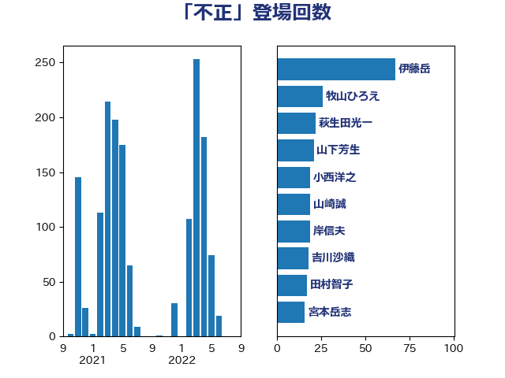

単語「不正」

| 伊藤岳 | 日本共産党 | 67 回 |
| 牧山ひろえ | 立憲民主党 | 26 回 |
| 萩生田光一 | 自由民主党 | 22 回 |
| 山下芳生 | 日本共産党 | 21 回 |
| 小西洋之 | 立憲民主党 | 19 回 |
| 山崎誠 | 立憲民主党 | 19 回 |
| 岸信夫 | 自由民主党 | 19 回 |
| 吉川沙織 | 立憲民主党 | 18 回 |
| 田村智子 | 日本共産党 | 17 回 |
| 宮本岳志 | 日本共産党 | 16 回 |
| 梶山弘志 | 自由民主党 | 16 回 |
| 鈴木俊一 | 自由民主党 | 16 回 |
| 青木愛 | 立憲民主党 | 14 回 |
| 阿部知子 | 立憲民主党 | 13 回 |
| 麻生太郎 | 自由民主党 | 13 回 |
| 平井卓也 | 自由民主党 | 12 回 |
| 本村伸子 | 日本共産党 | 12 回 |
| 井上哲士 | 日本共産党 | 10 回 |
| 吉川元 | 立憲民主党 | 10 回 |
| 堤かなめ | 立憲民主党 | 10 回 |
| 塩川鉄也 | 日本共産党 | 10 回 |
| 後藤茂之 | 自由民主党 | 10 回 |
| 武田良太 | 自由民主党 | 10 回 |
| 田村貴昭 | 日本共産党 | 10 回 |
| 菊田真紀子 | 立憲民主党 | 10 回 |
| 川田龍平 | 立憲民主党 | 9 回 |
| 沢田良 | 日本維新の会 | 9 回 |
| 古屋範子 | 公明党 | 8 回 |
| 大家敏志 | 自由民主党 | 8 回 |
| 大西健介 | 立憲民主党 | 8 回 |
| 寺田学 | 立憲民主党 | 8 回 |
| 末松義規 | 立憲民主党 | 8 回 |
| 松沢成文 | 日本維新の会 | 8 回 |
| 柴田巧 | 日本維新の会 | 8 回 |
| 森山浩行 | 立憲民主党 | 8 回 |
| 稲富修二 | 立憲民主党 | 8 回 |
| 笠井亮 | 日本共産党 | 8 回 |
| 藤田文武 | 日本維新の会 | 8 回 |
| 西村康稔 | 自由民主党 | 8 回 |
| 足立康史 | 日本維新の会 | 8 回 |
| 阿部弘樹 | 日本維新の会 | 8 回 |
| 中西健治 | 自由民主党 | 7 回 |
| 伊藤孝恵 | 国民民主党 | 7 回 |
| 吉田統彦 | 立憲民主党 | 7 回 |
| 岩渕友 | 日本共産党 | 7 回 |
| 羽田次郎 | 立憲民主党 | 7 回 |
| 小川淳也 | 立憲民主党 | 6 回 |
| 山添拓 | 日本共産党 | 6 回 |
| 平木大作 | 公明党 | 6 回 |
| 柳ヶ瀬裕文 | 日本維新の会 | 6 回 |
| 浅野哲 | 国民民主党 | 6 回 |
| 玉木雄一郎 | 国民民主党 | 6 回 |
| 石川大我 | 立憲民主党 | 6 回 |
| 赤木正幸 | 日本維新の会 | 6 回 |
| 黄川田仁志 | 自由民主党 | 6 回 |
| 佐々木さやか | 公明党 | 5 回 |
| 勝部賢志 | 立憲民主党 | 5 回 |
| 坂本哲志 | 自由民主党 | 5 回 |
| 清水貴之 | 日本維新の会 | 5 回 |
| 片山大介 | 日本維新の会 | 5 回 |
| 舩後靖彦 | れいわ新選組 | 5 回 |
| 西岡秀子 | 国民民主党 | 5 回 |
| 近藤昭一 | 立憲民主党 | 5 回 |
| 馬場伸幸 | 日本維新の会 | 5 回 |
| 高橋千鶴子 | 日本共産党 | 5 回 |
| 古賀之士 | 立憲民主党 | 4 回 |
| 城井崇 | 立憲民主党 | 4 回 |
| 奥野総一郎 | 立憲民主党 | 4 回 |
| 小宮山泰子 | 立憲民主党 | 4 回 |
| 小林鷹之 | 自由民主党 | 4 回 |
| 小沢雅仁 | 立憲民主党 | 4 回 |
| 小泉進次郎 | 自由民主党 | 4 回 |
| 岸真紀子 | 立憲民主党 | 4 回 |
| 打越さく良 | 立憲民主党 | 4 回 |
| 杉田水脈 | 自由民主党 | 4 回 |
| 浅田均 | 日本維新の会 | 4 回 |
| 田嶋要 | 立憲民主党 | 4 回 |
| 石井拓 | 自由民主党 | 4 回 |
| 緑川貴士 | 立憲民主党 | 4 回 |
| 緒方林太郎 | 無所属 | 4 回 |
| 野田国義 | 立憲民主党 | 4 回 |
| 長坂康正 | 自由民主党 | 4 回 |
| 階猛 | 立憲民主党 | 4 回 |
| 中谷一馬 | 立憲民主党 | 3 回 |
| 串田誠一 | 日本維新の会 | 3 回 |
| 住吉寛紀 | 日本維新の会 | 3 回 |
| 佐藤茂樹 | 公明党 | 3 回 |
| 堀井巌 | 自由民主党 | 3 回 |
| 塩村あやか | 立憲民主党 | 3 回 |
| 大岡敏孝 | 自由民主党 | 3 回 |
| 安江伸夫 | 公明党 | 3 回 |
| 小山展弘 | 立憲民主党 | 3 回 |
| 岡本あき子 | 立憲民主党 | 3 回 |
| 横沢高徳 | 立憲民主党 | 3 回 |
| 櫻井周 | 立憲民主党 | 3 回 |
| 源馬謙太郎 | 立憲民主党 | 3 回 |
| 熊谷裕人 | 立憲民主党 | 3 回 |
| 牧原秀樹 | 自由民主党 | 3 回 |
| 田中健 | 国民民主党 | 3 回 |
| 石垣のりこ | 立憲民主党 | 3 回 |
| 福島みずほ | 社会民主党 | 3 回 |
| 舟山康江 | 国民民主党 | 3 回 |
| 船橋利実 | 自由民主党 | 3 回 |
| 芳賀道也 | 国民民主党 | 3 回 |
| 若松謙維 | 公明党 | 3 回 |
| 西野太亮 | 自由民主党 | 3 回 |
| 赤嶺政賢 | 日本共産党 | 3 回 |
| 近藤和也 | 立憲民主党 | 3 回 |
| 道下大樹 | 立憲民主党 | 3 回 |
| 金子恭之 | 自由民主党 | 3 回 |
| 鈴木宗男 | 日本維新の会 | 3 回 |
| 鈴木庸介 | 立憲民主党 | 3 回 |
| 長友慎治 | 国民民主党 | 3 回 |
| 長浜博行 | 無所属 | 3 回 |
| 高木かおり | 日本維新の会 | 3 回 |
| ながえ孝子 | 無所属 | 2 回 |
| 上田清司 | 国民民主党 | 2 回 |
| 下条みつ | 立憲民主党 | 2 回 |
| 中川郁子 | 自由民主党 | 2 回 |
| 吉田とも代 | 日本維新の会 | 2 回 |
| 大石あきこ | れいわ新選組 | 2 回 |
| 室井邦彦 | 日本維新の会 | 2 回 |
| 宮崎政久 | 自由民主党 | 2 回 |
| 宮本徹 | 日本共産党 | 2 回 |
| 小野泰輔 | 日本維新の会 | 2 回 |
| 小野田紀美 | 自由民主党 | 2 回 |
| 山井和則 | 立憲民主党 | 2 回 |
| 岩谷良平 | 日本維新の会 | 2 回 |
| 岸田文雄 | 自由民主党 | 2 回 |
| 川合孝典 | 国民民主党 | 2 回 |
| 新妻秀規 | 公明党 | 2 回 |
| 末松信介 | 自由民主党 | 2 回 |
| 杉久武 | 公明党 | 2 回 |
| 杉尾秀哉 | 立憲民主党 | 2 回 |
| 東徹 | 日本維新の会 | 2 回 |
| 武部新 | 自由民主党 | 2 回 |
| 池畑浩太朗 | 日本維新の会 | 2 回 |
| 泉健太 | 立憲民主党 | 2 回 |
| 浜田聡 | NHK党 | 2 回 |
| 浮島智子 | 公明党 | 2 回 |
| 熊田裕通 | 自由民主党 | 2 回 |
| 牧島かれん | 自由民主党 | 2 回 |
| 田村まみ | 国民民主党 | 2 回 |
| 田村憲久 | 自由民主党 | 2 回 |
| 石川博崇 | 公明党 | 2 回 |
| 福島伸享 | 無所属 | 2 回 |
| 米山隆一 | 立憲民主党 | 2 回 |
| 細田健一 | 自由民主党 | 2 回 |
| 若宮健嗣 | 自由民主党 | 2 回 |
| 菅義偉 | 自由民主党 | 2 回 |
| 藤原崇 | 自由民主党 | 2 回 |
| 藤岡隆雄 | 立憲民主党 | 2 回 |
| 逢沢一郎 | 自由民主党 | 2 回 |
| 重徳和彦 | 立憲民主党 | 2 回 |
| 野村哲郎 | 自由民主党 | 2 回 |
| 鎌田さゆり | 立憲民主党 | 2 回 |
| 長峯誠 | 自由民主党 | 2 回 |
| 青山繁晴 | 自由民主党 | 2 回 |
| 高橋はるみ | 自由民主党 | 2 回 |
| 三浦靖 | 自由民主党 | 1 回 |
| 中川宏昌 | 公明党 | 1 回 |
| 中西祐介 | 自由民主党 | 1 回 |
| 中野洋昌 | 公明党 | 1 回 |
| 丸川珠代 | 自由民主党 | 1 回 |
| 伊藤孝江 | 公明党 | 1 回 |
| 伴野豊 | 立憲民主党 | 1 回 |
| 佐藤正久 | 自由民主党 | 1 回 |
| 倉林明子 | 日本共産党 | 1 回 |
| 原口一博 | 立憲民主党 | 1 回 |
| 吉田宣弘 | 公明党 | 1 回 |
| 國重徹 | 公明党 | 1 回 |
| 塩崎彰久 | 自由民主党 | 1 回 |
| 大口善徳 | 公明党 | 1 回 |
| 大塚耕平 | 国民民主党 | 1 回 |
| 宗清皇一 | 自由民主党 | 1 回 |
| 小沼巧 | 立憲民主党 | 1 回 |
| 山岡達丸 | 立憲民主党 | 1 回 |
| 山岸一生 | 立憲民主党 | 1 回 |
| 山田宏 | 自由民主党 | 1 回 |
| 山田賢司 | 自由民主党 | 1 回 |
| 山谷えり子 | 自由民主党 | 1 回 |
| 岡本三成 | 公明党 | 1 回 |
| 斉藤鉄夫 | 公明党 | 1 回 |
| 斎藤嘉隆 | 立憲民主党 | 1 回 |
| 斎藤洋明 | 自由民主党 | 1 回 |
| 松野博一 | 自由民主党 | 1 回 |
| 柚木道義 | 立憲民主党 | 1 回 |
| 森屋隆 | 立憲民主党 | 1 回 |
| 森田俊和 | 立憲民主党 | 1 回 |
| 池下卓 | 日本維新の会 | 1 回 |
| 河野義博 | 公明党 | 1 回 |
| 浜口誠 | 国民民主党 | 1 回 |
| 浦野靖人 | 日本維新の会 | 1 回 |
| 清水真人 | 自由民主党 | 1 回 |
| 漆間譲司 | 日本維新の会 | 1 回 |
| 玄葉光一郎 | 立憲民主党 | 1 回 |
| 田名部匡代 | 立憲民主党 | 1 回 |
| 田島麻衣子 | 立憲民主党 | 1 回 |
| 石井章 | 日本維新の会 | 1 回 |
| 石井苗子 | 日本維新の会 | 1 回 |
| 石川香織 | 立憲民主党 | 1 回 |
| 石橋林太郎 | 自由民主党 | 1 回 |
| 石橋通宏 | 立憲民主党 | 1 回 |
| 福重隆浩 | 公明党 | 1 回 |
| 穀田恵二 | 日本共産党 | 1 回 |
| 空本誠喜 | 日本維新の会 | 1 回 |
| 竹谷とし子 | 公明党 | 1 回 |
| 篠原豪 | 立憲民主党 | 1 回 |
| 茂木敏充 | 自由民主党 | 1 回 |
| 藤井比早之 | 自由民主党 | 1 回 |
| 藤巻健太 | 日本維新の会 | 1 回 |
| 足立敏之 | 自由民主党 | 1 回 |
| 里見隆治 | 公明党 | 1 回 |
| 鈴木義弘 | 国民民主党 | 1 回 |
| 長妻昭 | 立憲民主党 | 1 回 |
| 阿部司 | 日本維新の会 | 1 回 |
| 音喜多駿 | 日本維新の会 | 1 回 |
| 高橋英明 | 日本維新の会 | 1 回 |
| 齋藤健 | 自由民主党 | 1 回 |